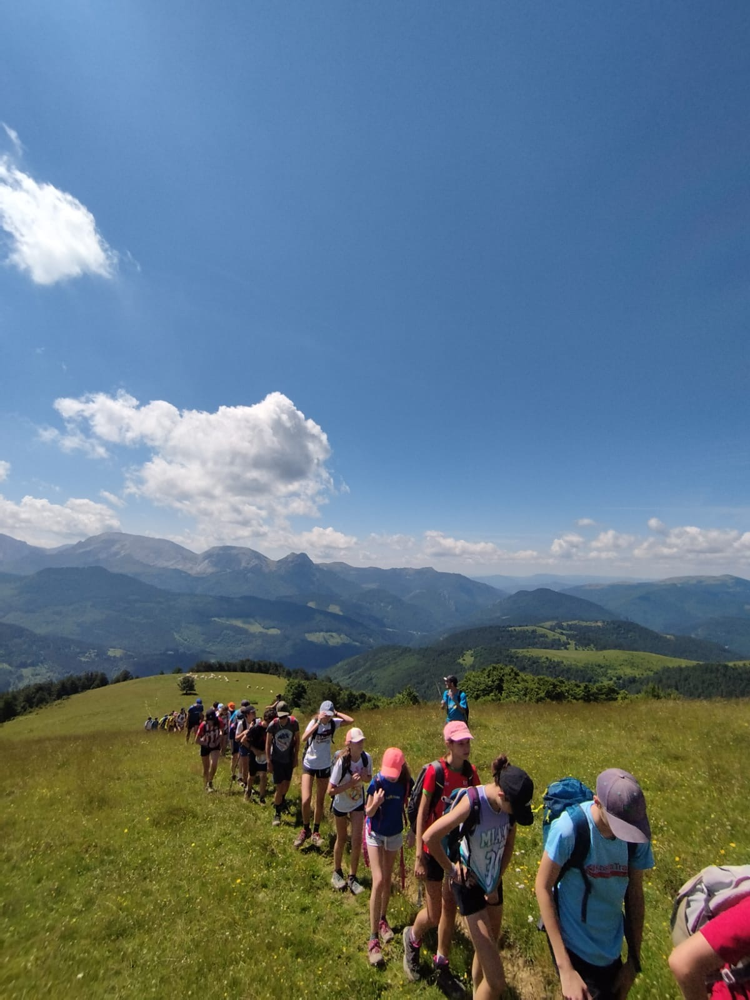

Estas son unas de las actividades que se harán durante el campamento / Hauek dira udalekuan egingo diren jarduera batzuk:
- Subida al Larrondoa / Larrondoaren igoera:
- Se subirá al Larrondoa desde la borda de La Salle, y la ruta será esta:
- Juegos en el rio / Jokoak errekan:
- Se harás gymkanas y juegos de agua en el rio.
- Ruta a belabarce / Ruta belabarcera:
- Se irá a belabarce y allí se harán una serie de juegos en las campas que hay, además de esto, se dará la opción de bañarse en una cascada, la ruta será la siguiente::
- Excursion a la venta de Juan Pito / Juan Pitoko saltokira txangoa:
- Se propondrá una excursión a la venta de Juan Pito en la que cada uno podrá comprar comida o algún recuerdo. Además de esto se hará una pequeña ruta:

Subida al Larrondoa

Juegos en el río

Ruta a Belabarce

Excursión a la venta de Juan Pito